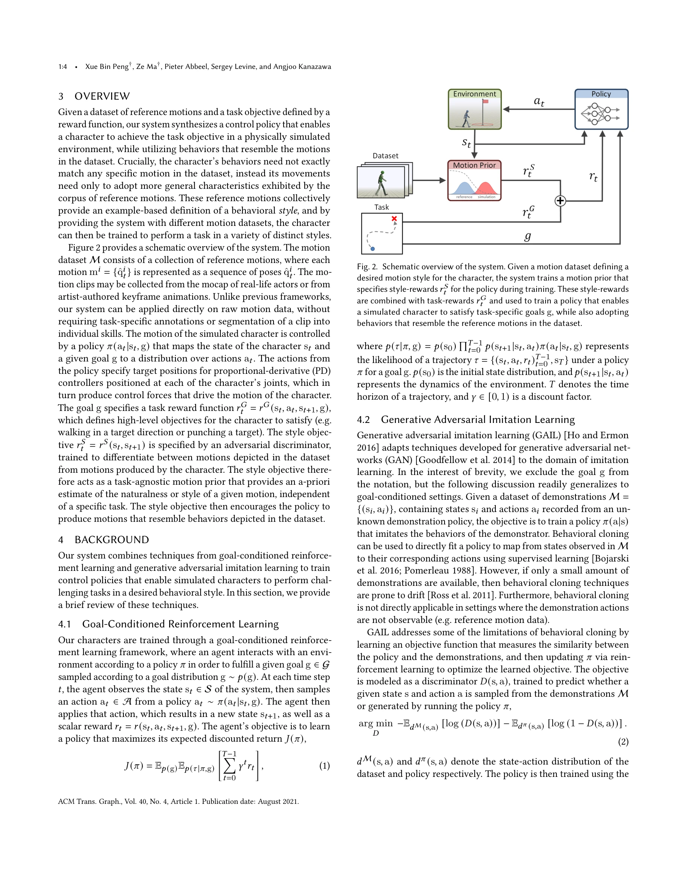
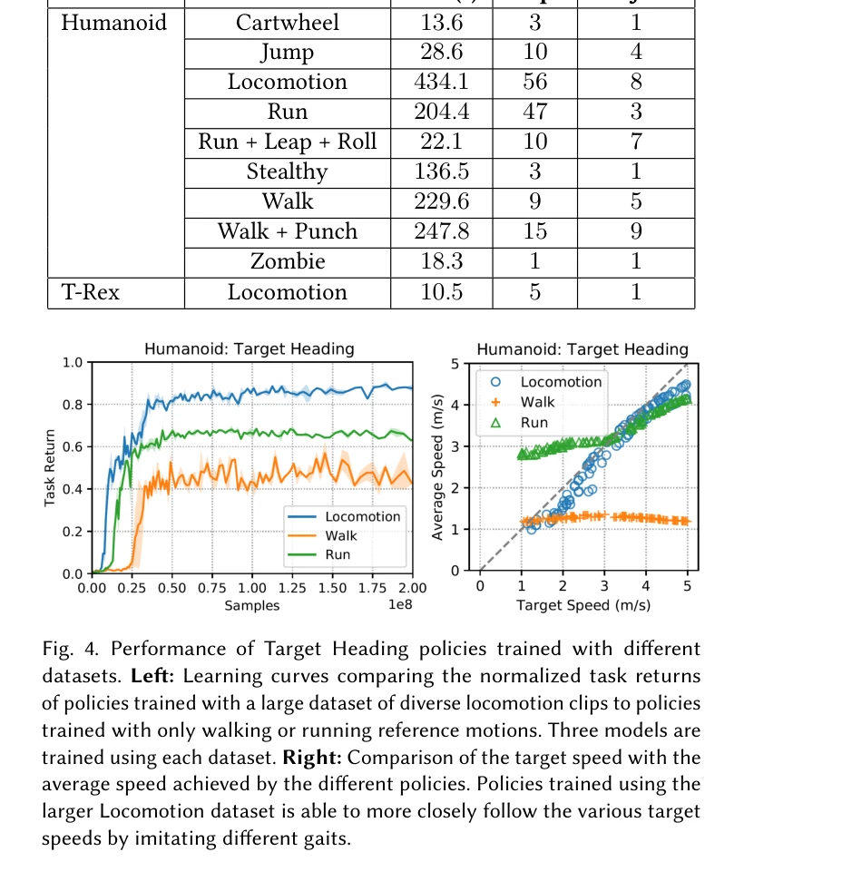

저자: Xue Bin Peng, Ze Ma, Pieter Abbeel, Sergey Levine, Angjoo Kanazawa | 날짜: 2021-04-05 | URL: https://arxiv.org/abs/2104.02180

Fig. 2. Schematic overview of the system. Given a motion dataset defining a
물리 기반 캐릭터 애니메이션에서 adversarial motion prior를 학습하여 비구조화된 모션 클립 데이터셋으로부터 자동으로 스타일을 추출하고, 간단한 보상 함수로 정의된 고수준 태스크 목표를 달성하면서도 자연스러운 움직임을 생성하는 방법을 제안한다.

Fig. 4. Performance of Target Heading policies trained with different
Fig. 2. Schematic overview of the system. Given a motion dataset defining a
총평: 본 논문은 adversarial motion prior를 통해 비구조화 모션 데이터의 자동 활용을 실현한 물리 기반 캐릭터 애니메이션 분야의 중요한 기여로, 모션 선택 메커니즘 설계의 부담을 제거하면서도 최첨단 성능을 달성하며 게임, 영상, 로봇 등 다양한 응용 분야에 실질적 가치를 제공한다.